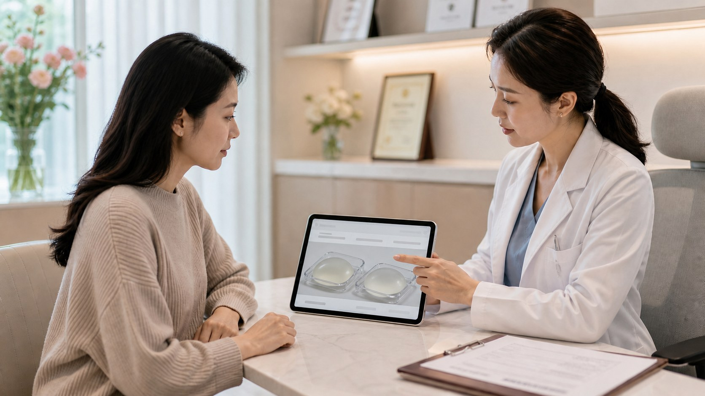

胸部整形 · 隆胸
隆胸是什么｜一次正规的医疗手术，先认识它再谈效果
这篇先帮你把隆胸这件事看清楚：它是需要挂号和麻醉的医疗手术，不是美容院里的保养项目；也讲清什么人适合、什么人不适合，以及为什么安全永远排在效果前面。

隆胸，医学上通常叫乳房增大或乳房塑形，是一类在麻醉下、通过手术切口，把假体或自体脂肪置入乳房，从而改变乳房大小和形态的手术。它需要正规的手术环境、麻醉支持、术后监护，由执业医师完成。它和美容院里的按摩、精油推拿、护理 SPA 不是一回事，后者不进入组织，也无法真正改变胸部的大小。这个区别，是认识隆胸的第一件事。
为什么要强调「它是手术」？因为只要是手术，就带有一切外科手术共有的风险：麻醉反应、出血、感染、疤痕，以及假体相关的远期问题。这些风险客观存在，不会因为换一家「更高端」的门店就消失。一个负责任的医生，会在术前把风险和边界一项项讲清楚；把这些避而不谈、只谈效果的，反而需要留意。
那什么人适合做？通常是这几种情况：先天发育偏小、产后哺乳后变扁平或干瘪、左右胸部明显不对称，并且长期被这些困扰，身体条件可以耐受手术，对结果有「合理期待」的人。这里的关键词是「改善」，不是「完美」。隆胸能让你比现在更满意，不会让你变成另一个人。
什么人不太适合？可以分成两类。一类是身体条件不允许：正在哺乳或哺乳后不久、怀孕或备孕、有还没控制住的高血压、糖尿病、凝血异常，或有免疫性疾病的人，都要先和医生认真评估。另一类是预期不现实：希望隆胸后「尽善尽美、永不变形、谁也看不出来」的，或者单纯为了迎合别人眼光、被一时情绪推动的。这两类，无论机构多好，都不建议急着做。
如果你正在考虑，也可以先问自己三个问题：我真的被这件事困扰很久了吗？我期望的是「改善」，还是「彻底变成另一个人」？我的身体条件能不能耐受，医生又是否认可？这三个问题想清楚了，再去做面诊，沟通会更有效率。
一句话：隆胸是正规的医疗手术，安全永远排在效果前面。先确认自己身体合适、预期合理，再谈「做不做」和「怎么做」，才不会在信息不对称里吃亏。
本文用于公众健康教育，不构成医疗建议，不替代面诊。医美决策请与具备资质的医师面诊后作出。